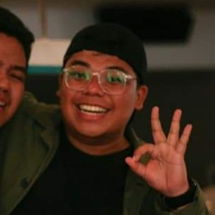

Deejae Dumlao

Summary
"Gotta believe in magic or die trying."
Education
- Primary: University of the East (2005-2011)
- Secondary:University of the East (2011-2015)
- Tertiary:University of Santo Tomas (2015-2019)
- Bachelor of Arts in Sociology
Work Experience
-
Chief Photographer - The Varsitarian
2016-2019
- Managed the school publication's photography team
- Edited photos and pages for the school paper
- Provided photos for online and newspaper use
- Collaborated with other editors for events and documentation
-
Multimedia Specialist - Philstar.com
2020-2022
- Provided photos for online and newspaper content
- Collaborated with various teams for coverage and events
- Edited videos and photos for content
- Analyzed data to develop new strategies for online presence
-
Cultural Ambassador - Ministry of Education of Spain
2022-2024
- Imparted knowledge on Filipino and English culture
- Taught english to Spanish students in the primary level
- Helped learners understand the importance of bilingualism
- Supported Spanish teachers on teaching english for young kids
- Assisted a Spanish school on developing and improving the school's curriculum
Skills
- Creative Thinking & Effective Communication
- Intermediate Clerical Skills
- Intermediate Writing Skills
- Computer literate
- Microsoft Office Proficient
- Adobe Programs Proficient
- Canva proficient
- Graphic Design
- Photography
- Videography
- Multimedia editing
- HTML5
- Web Development(SOON)
Awards & Certifications
-
Certificate of Participation
Tsek.ph Verification Workshop - University of the Philippines Diliman
-
Certificate of Appreciation as Guest Speaker
ZOOMing Out: A Return To Photography During The Pandemic
-
Certificate of Appreciation as Guest Speaker
Journalism Seminar of The Barrister, San Beda University - College of Law
-
Certificate of Appreciation as Guest Speaker
Photojournalism in Times of Pandemic - University of the East Journalism Society
Other